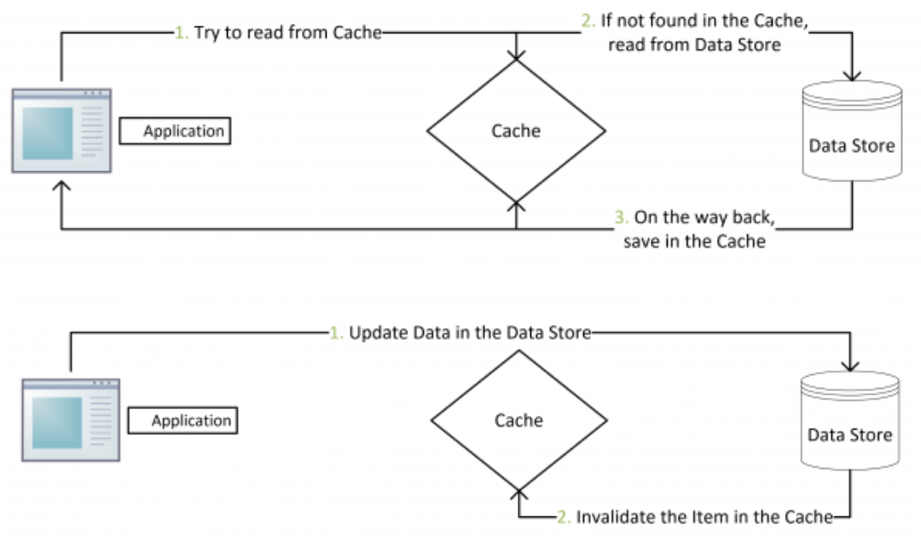
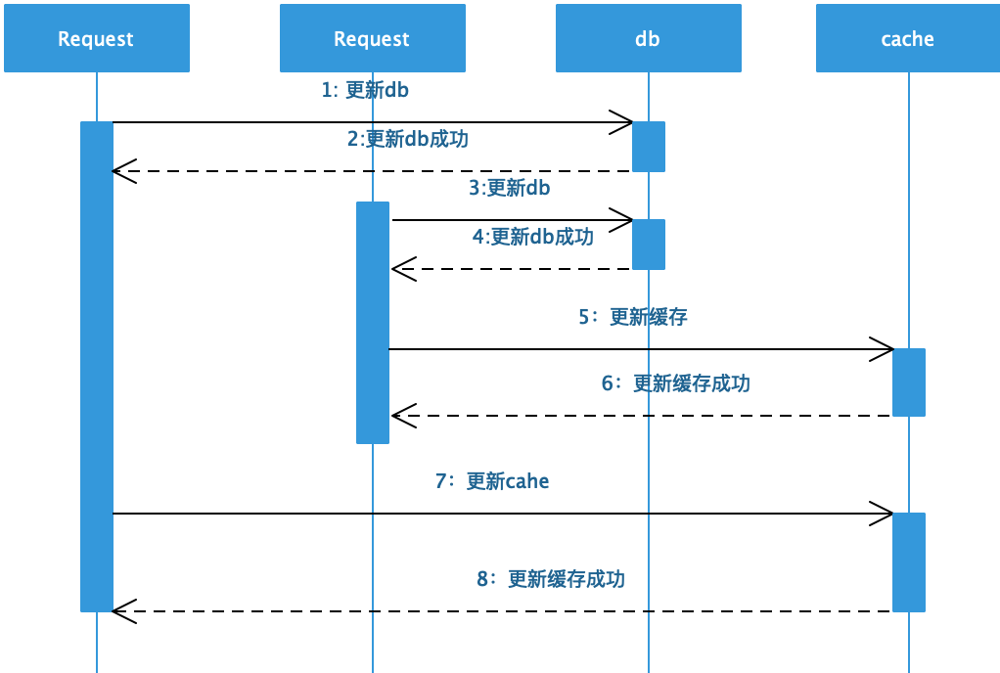
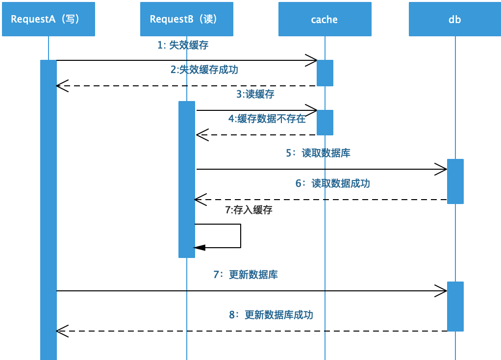
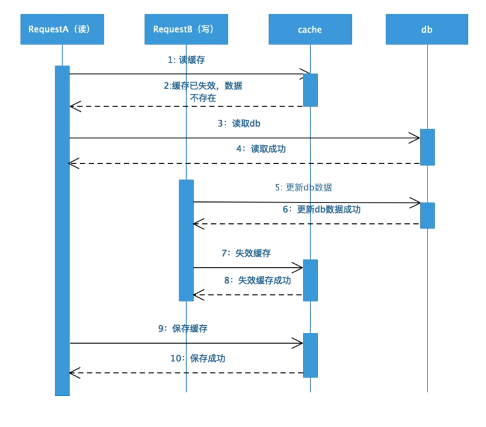
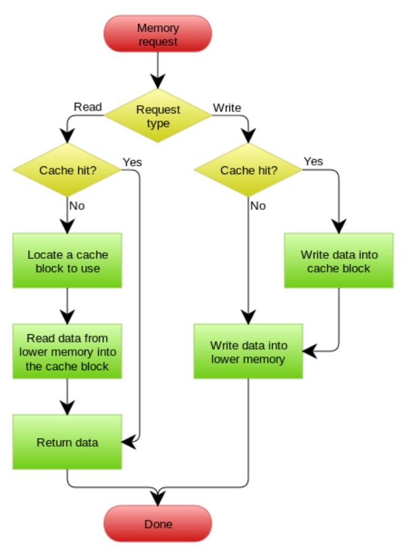
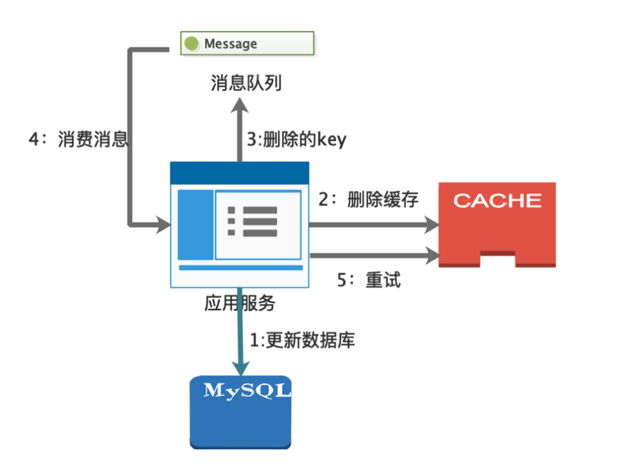
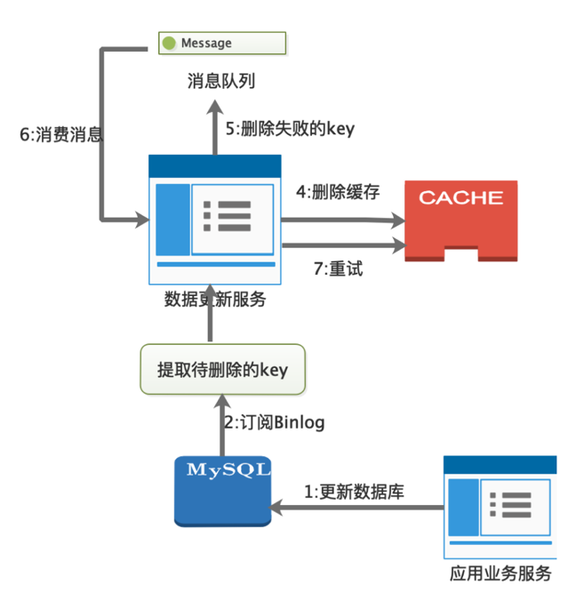
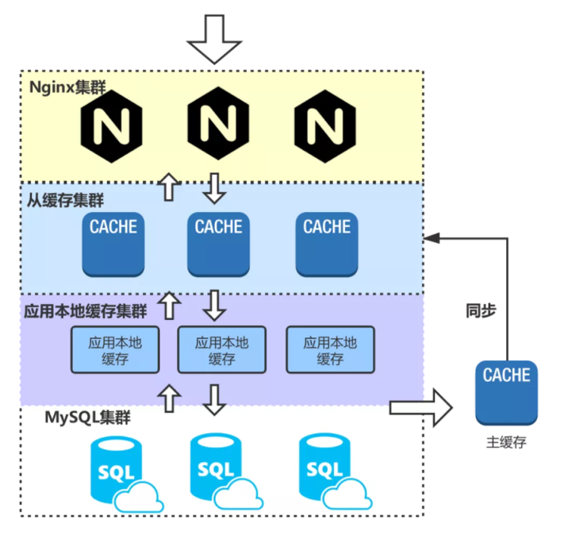
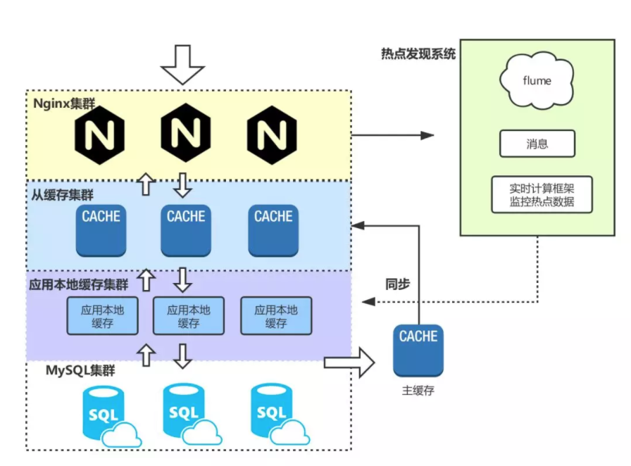

缓存的正确使用
常见概念
缓存领域里相关的几个常用术语：
- 1、缓存命中：表示数据能够从缓存中获取，不需要回源
- 2、cache miss：表示没有命中缓存，如果缓存内存中还有内存空间的话，会将数据加入到缓存中
- 3、存储成本：当没有命中缓存时，回源获取后会将数据放置到存储中，整个将数据放置到存储空间所需要的时间以及空间称之为存储成本
- 4、缓存失效：当源数据发生变更后，意味着缓存中的数据失效
- 5、缓存污染：将不经常访问的数据放置到缓存存储空间中，以至于高频访问的数据无法放置到缓存中
- 6、替代策略：当数据放置到缓存空间时，由于空间不足时，就需要从缓存空间中去除已有的数据，选择去除哪些数据就是由替代策略决定的。常见的替代策略有如下这些：
- Least-Recently-Used（LRU）：最近最少使用，如果数据最近被访问过，那么将来被访问的几率也更高，强调的是最近是否被访问过
- Least-Frequently-Used（LFU）：最不经常使用，如果一个数据在最近一段时间内使用次数很少，那么在将来一段时间内被使用的可能性也很小，强调的是最近被访问次数的多少
- SIZE：按大小进行淘汰，大的先淘汰
- First in First Out（FIFO）：先进先出，如果一个数据最先进入缓存中，则应该最早淘汰掉
- 另外Redis又区分是否从设置了过期时间的key中执行上面的算法，比如volatile-lru，volatile-random等。
由于存储空间有限，替代策略要解决的核心问题是尽量保留高频访问的缓存数据，降低缓存污染以提升缓存命中率和整体的缓存效率，难点在于，需要基于数据历史访问情况，以一种合适的对未来访问情况的预估才能找到更佳的策略。简单说，就是根据历史推测未来，根据历史key的访问情况，推测未来key的访问情况，降低缓存污染。
访问缓存场景分析
使用缓存通常的操作是，请求先访问缓存数据，如果缓存中不存在的话，就会回源到数据库中然后将数据写入到缓存中；如果存在的话就直接返回数据。从整个过程来看，缓存层就处于数据访问的前置环节，分担数据库在高并发容易出现系统故障的风险，所以在使用过程中需要对缓存层很谨慎的进行分析。在访问缓存数据时，有常见的三大场景：缓存穿透、缓存击穿以及缓存雪崩。
缓存穿透
现象：每次请求直接穿透缓存层，直接回源到数据库中，给数据库带来了巨大访问压力，甚至宕机。
原因：访问数据会先访问缓存，如果数据不存在缓存中才会查询数据库，但是如果查询数据库也查询不出来数据，也是说当前访问数据永远不会写入缓存中。这样就导致了，访问一定不存在的数据，就相当于缓存层形同虚设，每次请求都会到db层，造成数据库负担过大。强调的是获取不存在的缓存数据，是利用业务规则的漏洞对系统发起的攻击。
解决方案：
方案一：采用bloom filter保存缓存过的key，在访问请求到来时可以过滤掉不存在的key，防止这些请求到db层
把缓存过的key，都放到bloom filter中，新来一个key，如果bloom filter中没有，说明这个key一定不存在；如果bloom filter里面有，它也有可能不存在。不能做到100%过滤，只可以做到很大程度上过滤，减少风险，不能完全解决这个问题。比如刻意构造的某个key，缓存中没有，但却恰好能通过bloom fliter。
方案二：如果db查询不到数据，保存空对象到缓存层，设置较短的失效时间
该方案在防穿透方面，比方案一稍微好一点，不存在的key不会短时间大量穿透到数据库。但如果key的范围比较大，就会存在缓存中大量无数据的key。比较好的方法的是方案一和方案二的结合。
String value = null;
BloomFilter bloomFilter = BloomFilter. create (Funnels. integerFunnel (), size);
if(bloomFilter.mightContain(key)) {
value = JedisUtils. get (key); //从redis中获取数据
if(value == null) { //表示redis中没有数据
value = queryFromDB(key); //从DB查询
if(value == null) { //DB中也没有数据
value = ""; //把value设置成空，然后放饶redis中，设置过期时间为10s，10s内不会再被穿透
JedisUtils. set (key, value, 10);
}
}
}else{
//Key 一定不存在
}
方案三：针对业务场景对请求的参数进行有效性校验，防止非法请求击垮db
缓存击穿
现象：当某一key失效时，造成大量请求到db层，击垮存储层。
原因：为了保证缓存数据的时效性，通常会设置一个失效时间，如果是热点key，高并发时会有海量请求直接越过缓存层到达数据库，这样就会给数据库造成较大的负担，甚至宕机。强调的是热点key的失效，解决的核心原则是规避数据库的并发操作。
解决方案
方案一：使用互斥锁，当缓存数据失效时，保证一个请求能够访问到数据库，并更新缓存，其他线程等待并重试
String key = "";
String value= JedisUtil.get(key);
if (value == null) {
Locklock = clusterLock.lock(key);//注意这里锁的是key
try {
value = JedisUtil.get(key);
if(value == null){
value = queryFromDB(key);
JedisUtil.set(key, value);
}
} catch (Exception e){
} finally {
lock.release();
}
}
方案二：缓存数据永远不过期，如果缓存数据不设置失效时间的话，就不会存在热点key过期造成了大量请求到数据库。但是，缓存数据就变成"静态数据"，因此当缓存数据快要过期时，采用异步线程的方式提前进行更新缓存数据。
缓存雪崩
现象：多个key失效，造成大量请求到db层，导致db层负担过重甚至宕机。
原因：缓存雪崩是指在我们设置缓存时采用了相同的过期时间，导致缓存在某一时刻同时失效，请求全部转发到数据库，最终导致数据库瞬时压力过大而崩溃。强调的是多个key的集体失效，与key是否热点无关，解决的核心原则是，让key的失效时间均匀分布。
解决方案：
方案一：使用互斥锁的方式，保证只有单个线程进行请求能够达到db。这种并发会降低很多。
String key = "";
String value = JedisUtil.get(key);
if (value == null) {
Lock lock = clusterLock.lock("redisLock");//注意这里锁的是公共的资源
try {
value = JedisUtil.get(key);
if (value == null) {
value = queryFromDB(key);
JedisUtil.set(key, value);
}
} catch (Exception e){
} finally {
lock.release();
}
}
方案二：多每个key的失效时间在基础时间上再加上一个1~5分钟的随机值，这样就能保证大规模key集体失效的概率，并且需要尽量让多个key的失效时间能够均匀分布
数据更新场景分析
引入缓存后数据会分别存放到缓存以及数据库两个地方，因此数据更新时，需要涉及到这两处地方的更新，并且更新时序的不同会有不同的结果。关于数据更新目前业界已经沉淀了Cache Aside Pattern，Read/Write through等多种方式。
Cache Aside Pattern（缓存靠边策略）

- 失效：应用程序先从cache取数据，没有得到，则从数据库中取数据，成功后，放到缓存中
- 命中：应用程序从cache中取数据，取到后返回
- 更新：先把数据存到数据库中，成功后，再让缓存失效
Cache Aside Pattern在数据更新的时候是采用先更新数据库，再失效缓存。为什么需要采用这样的方式来解决数据更新的问题，先假设更新数据库以及缓存都会事务成功。
1、为什么不是更新缓存，而是失效（删除）缓存？
① 并发写容易写覆盖造成脏数据问题：当数据发生更新的时候，针对缓存数据可以有两种方式来进行处理分别是更新缓存数据以及失效数据让下一次读请求重新从db中获取数据后重载入缓存中。假设更新缓存数据的话，在并发情况下会存在多线程写缓存造成脏数据的问题，如下图：（先更新缓存再更新数据库一样会出现不一致的问题）

如上图所示，假设A、B两个线程，A先更新数据库，B再更新数据库，然后分别进行更新缓存，但是B先更新缓存成功，A后更新缓存成功，这样就导致数据库是最新的数据但是缓存中是旧的脏数据。而如果失效缓存数据的话，可以保证下一次读请求回源到数据库将最新的数据载入到缓存中，避免脏数据的问题。
②双写不同数据源容易造成数据不一致：同时写数据库以及缓存数据，任何一个更新失败都会造成数据不一致。无论是先更新缓存再更新数据库，还是先更新数据库再更新缓存，这两种情况在并发的情况下也很容易出现双写不成功。
③违背数据懒加载，避免不必要的计算消耗：比如有些缓存值是需要经过复杂的计算才能得出，如果每次更新数据的时候都更新缓存，但是后续在一段时间内并没有读取该缓存数据，这样就白白浪费了大量的计算性能，完全可以后续由读请求的时候，再去计算即可，这样更符合数据懒加载，降低计算开销。
2、可能存在的更新时序？
在确定采用数据更新后再失效缓存进行处理的话，针对数据库以及缓存更新时序就存在如下这几种：
①先失效缓存再更新数据库

如上时序图所示，线程A先失效缓存数据的时候，B线程读请求发现缓存数据为空的话，就会从数据库中读取旧值放入到缓存中，这样就导致后续的读请求读到的都是缓存中的脏数据。针对这样的情况可以采用延时双删的策略来有效避免，伪代码如下：
cache.delKey(key);
db.update(data);
Thread.sleep(xxx);
cache.delKey(key);
主要是在写请求更新完数据库后进行休眠一段时间，然后删除可能由读请求带来的脏数据存入到缓存。另外，数据库如果采用的是主从分离的架构的话，读出来的数据也有可能是主从未同步完成造成的脏数据。这种通过延时双删的方式需要线程休眠，因此很显然会降低系统吞吐量，并不是一种优雅的解决方式，也可以采用异步删除的方式。当然可以设置过期时间，到期后缓存失效载入最新的数据，需要系统能够容忍一段时间的数据不一致。
②先更新数据库再失效缓存
这是推荐的更新数据时采用的方式，实际上这也是可能存在数据不一致的情况，时序图如下：

假设缓存刚好到期失效时，读请求从db中读取数据，写请求更新完数据后再失效缓存后，读请求将旧数据存入到缓存中，这种情况也会导致脏数据的问题。实际上这种情况发生的概率很低，要发生这种情况的前提条件是写数据库要先于读数据库完成，一般而言读数据库相比于写数据库要耗时更短，这种前提条件成立的概率很低。针对这种"逻辑失败"造成的数据不一致，可以采用上面所说的异步双删的策略以及过期失效的方式来避免。
可以看出在并发的情况下，如果条件苛刻的话，这两种更新的时序都有可能导致脏数据的情况。只不过在大概率的情况下先更新数据库再失效缓存能够保证数据一致，也是业界推荐的处理方式，包括Facebook的论文《Scaling Memcache at Facebook》也使用了这个策略。当数据发生变更上，需要考虑的是最新的数据放置在哪里？很显然cache aside pattern 选择的是将最新的数据放到了db上（cache asside pattern：缓存靠边站），因为数据不一致的情况大概率会存在，需要根据业务场景选择合适的可信设备存储最新的数据。
Write/Read Through
Cache Aside Pattern对db以及缓存的更新逻辑是由调用方自己去控制，很显然这是一个很复杂的过程。Write/Read Through对调用方而言，缓存是作为整个的数据存储，而不用关心缓存后面的db，数据库的更新则是由缓存统一进行管理，对调用方而言只需要和缓存进行交互，整体过程是透明的。
Read Through：读取数据时，未命中缓存则缓存层同步的读取数据库并写缓存，然后返回数据；命中缓存则直接返回数据。对调用方而言只需要和缓存层交互即可。
Write Through：当有数据更新的时候，如果没有命中缓存，直接更新数据库，然后返回。如果命中了缓存，则更新缓存，然后再由Cache自己同步更新数据库。

Write Behind Cache Pattern
这种模式是当数据更新的时候直接更新缓存数据，然后建立异步任务去更新数据库。这种异步方式请求响应会很快，系统的吞吐量会明显提升。但是，因为是异步更新数据库，数据一致性的保障就会变弱，如果更新数据库失败则会永远的造成系统脏数据，需要很精细设计系统重试的策略，另外如果异步服务宕机的话，还要考虑更新的数据如何持久化，服务重启后能够迅速恢复。在更新数据库时，由于并发多任务的存在，还需要考虑并发写是否会造成脏数据的问题，就需要追溯每次更新数据的时序。使用这种模式需要考虑的细节会有很多，设计出一套好的方案是件很不容易的事情。
更新策略的思考
上面的更新策略是非常经典的，也是业界经过大规模业务总结下来的经验，如果认真分析这四种更新策略的话，也会是受益匪浅，在更新策略的设计时是主要关注如下两个方面：
最新的数据应该放置在哪里？
缓存的存在是为了系统高性能，利用内存IO高速读取的特性，来提升系统的性能，提高系统吞吐量，另外，缓存的存在会让一部分读请求不会到达db层，分解了db的压力，毕竟db是最容易出现瓶颈的地方。这是为什么利用缓存的两个重要原因。但是，带来的问题就是，数据会存在在两个地方分别是缓存以及数据库中，当数据更新的时候就需要思考让"正确的数据应该放在哪个最可信的存储介质上"，就需要结合业务性质在两个数据存储介质上进行选择。
Cache Aside Pattern选择先更新数据库，再失效缓存，这样可以保证最新最正确的数据一定会落在数据库中，这样可以保证核心的业务数据在数据库中一定是可信的，但是带来的问题是业务逻辑更复杂，系统处理更新逻辑耗时更长。如果是非核心数据的更新，可以选择write behind cache pattern的方式，只需要更新缓存即可，能够快速的响应。缺点是很容易造成数据不一致，数据库中的数据不一定的就是最可信的数据。所以，不同的更新策略实际上也是将最新的数据优先选择放在哪里更合适以及系统性能的一种权衡，需要结合业务场景做好trade off。
数据不一致性
数据不一致的原因
由于引入缓存，数据就会分散在两处不同数据源，当数据更新时，实时上很难做到数据一致，除非采用强一致性方案。在找出合适的解决方案前，需要分析下存在数据不一致的主要原因，才能对症下药：
1）逻辑失败造成的数据不一致：上面分析了更新数据时的四种更新策略，在并发的情况下，无论是先删除缓存再更新数据库，还是先更新数据库再失效缓存，都会存在数据不一致的情况，主要是因为异步读写请求在并发情况下的操作时序导致的数据不一致，称之为"逻辑失败"。解决这种因为并发时序导致的问题，核心的解决思想是将异步操作进行串行化。
2）物理失败造成的数据不一致：在cache aside pattern中先更新数据库再删除缓存以及异步双删策略等等，如果删除缓存失败时都会出现数据不一致的情况。但是数据库更新以及缓存操作是没办法放到一个事务中。一般来说，使用的缓存是分布式缓存，如果缓存服务很耗时，那么将更新数据库以及失效缓存放到一个事务中，就会造成大量的数据库连接挂起，严重的降低系统性能，甚至会因为数据库连接数过多，导致系统崩溃。像这种因为缓存操作失败，导致的数据不一致称之为"物理失败"。大多数情况物理失败的情况会采用重试的方式进行解决。
数据一致性的解决方案
在绝大部分业务场景中，追求的是最终一致性，针对物理失败造成的数据不一致常用的方案有：消费消息异步删除缓存以及订阅Binlog的方式，针对逻辑失败造成的数据不一致常用的方案有：队列异步操作同步化。
消费消息异步删除缓存

订阅Binlog

利用队列串行化
分析cache aside pattern发现在并发的情况下也会存在数据不一致的场景，只不过发生的概率很低，另外如果先删除缓存再更新数据库在并发读写的情况下也会存在数据不一致的情况。类似这种由于并发时序导致的数据不一致的情况，都是因为写请求还没有结束读请求读取的是旧数据，如果读请求在写请求之后处理，即请求的处理能够串行化的话，就能保证读请求读到的是写请求更新的最新的数据。
将请求进行串行化，最常用的方式是采用队列的方式，一个队列只能对应一个工作线程，更新数据的写请求放置队列中，等待异步处理；读请求如果能从缓存中获取数据，则返回，如果缓存中没有数据，就将读请求放置到队列中，等待写请求数据更新完成。
这种方案需要考虑的问题有：
1）读请求长时间阻塞：如果队列中挤压了多个写请求，则读请求会存在长时间阻塞的情况，需要设置超时处理策略，一旦超过超时时间，则直接读取数据库返回，避免长时间不响应；另外，在业务中需要进行压测，考虑队列中在峰值情况下会积攒多少写请求，如果过多，需要考虑队列优化的方式和相应的解决方案；
2）多个队列分散压力：可以根据数据项通过hash等路由方式，创建多个队列并行执行来提升系统吞吐量；
3）操作复杂需要考虑全面：由于采用队列来进行串行化，那么要考虑队列的可用性，队列阻塞以及服务挂掉后的容灾恢复策略是否健壮等等，相对而言整体的方案需要考虑的点会有很多；
这种方式可以做到数据强一致性，由于串行化系统的吞吐量会下降很多并且操作复杂，毕竟任何方案都会有利弊权衡的过程，需要根据业务场景选择合适的技术方案。针对数据强一致性很有很多方案，但基本上操作设计都很复杂，在大多数业务场景满足数据最终一致性即可。
当然除了以上这三种通用的方法外，为缓存设置过期时间以及定时全量同步，也是接近最终一致性的最简单以及有效的方式。
常见的几个场景问题
在分析数据更新的策略后发现正确使用缓存是一件很不容易的事情，在实际使用缓存时，还会有很多有意思的场景（坑），在这里进行一下总结：
1）过期还是不过期缓存数据：针对缓存数据是否需要设置过期时间也需要结合场景来进行分析，一些长尾商品，大多数数据在业务中都是读场景更多，并且缓存空间很大的话，就可以考虑不过期数据。那是否就意味着这就是一份静态数据了？当缓存空间已满时，数据会根据淘汰策略移除缓存，另外数据更新时也可以通过Binlog等其他方式进行异步失效缓存。
如果系统通过消息异步更新操作成本过高或者依赖于外部系统无法进行订阅binlog异步更新的话，就需要采用过期缓存数据来保证数据最终一致性。
2）维度化缓存与增量更新：如果一个实体包含多个属性，在实体发生变更时，如果将所有的属性全部更新一遍，这个成本就很高，况且只是其中的几个属性发生变化。因此，将多个属性进行各个维度化进行拆解，按照多维度进行缓存，更新时只需要增量更新对应维度即可。
3）大value：大value的问题要时刻警惕，可以考虑将value进行压缩，以及缓存时进行拆解，然后在业务服务中进行数据聚合来避免大value的问题。
4）热点缓存问题：针对热点数据如果每次都从远程缓存去获取，会给缓存系统带来过多的负载，会导致获取缓存数据响应过慢，可以使用缓存集群，挂载更多的从缓存，读取数据从从缓存中获取。针对热点数据可以使用应用本地缓存来减少对远程缓存的请求负载。
5）数据预热：可以预先将数据加载到缓存中，防止缓存数据为空，大量的请求回源到db。如果容量很高可以考虑全量预热，如果容量优先，就只能选择高频热点数据进行预热，还需要关注是否有批量操作以及慢sql带来的性能问题，在整个数据预热过程中需要有可靠的监控机制来保障。
6）非预期热点数据：针对业务预估不足的热点数据，需要有热点发现系统来统计热点key，实时监控非预期的热点数据，可以将这些key推到本地缓存中，防止预估不足的热点key拖垮远程缓存服务。
7）缓存实例故障快速恢复：当某一个缓存实例故障后，缓存一般是采用分片实例存储，假设缓存key路由策略采用的取模机制的话，会导致当前实例的流量迅速到达db层，这种情况可以采用主从机制，当一个实例故障后其他实例可以使用，但是这种方式的问题在于水平扩展不够，如果分片实例上增加一个节点的话，会导致缓存命中率迅速下降。
如果key路由策略采用的一致性哈希的话，某一个实例节点故障，只会导致哈希环上的部分缓存不命中不会导致大量请求到达db，但是针对热点数据的话，可能会导致该节点负载过高成为系统瓶颈。针对实例故障恢复的方式有：
1. 主从机制，对数据进行备份，尽可能保障有可用数据；
2. 服务降低，新增缓存实例然后异步线程预热数据；
可以先采用一致性哈希路由策略，当出现热点数据时到达某个阈值时降级为取模的策略。
几个影响因素
影响缓存整体的性能会有很多大大小小的影响因素，比如语言本身的特性的影响，例如Java需要考虑GC的影响。还需要尽可能的提升缓存命中率等等多个方面，总结下来，核心的几个影响因素如下：
一、提升缓存命中率。影响缓存命中率的几个因素：
- 业务时效性要求：缓存适合"读多写少"的业务场景，并且业务性质决定了时效性要求，不同的时效性要求决定了缓存的更新策略以及过期时间，对时效性越低的业务越适合使用缓存，并且缓存命中率越高；
- 缓存粒度设计：通常而言，缓存对象粒度越小就越适合使用缓存，不会导致频繁更新导致缓存命中率下降
- 缓存淘汰策略：如果缓存空间有限，不同的缓存淘汰策略也会影响缓存命中率，如果淘汰的缓存数据后续被大量使用，无疑就会降低缓存命中率
- 缓存部署方式：在使用分布式缓存时，要做好容量规划以及容灾策略，防止缓存实例故障后造成大规模缓存失效
- Key路由策略：不同路由策略会在节点实例故障后带来不同的影响，如果采用取模的方式水平扩展时则会降低缓存命中率
通过这些分析，提高缓存命中率没有放之四海而皆准的统一规则，需要从这些角度去思考，尽可能的在高频访问且时效性不是很高的业务数据上使用缓存。
二、序列化方式：使用远程缓存服务免不了需要经过序列化后在网络中进行数据传输，那么选择不同的序列化方式对缓存性能会有影响。选择序列化方式时需要考虑序列化耗时、序列化后在网络传输中包大小以及序列化的计算开销。
三、GC影响：采用多级缓存以及大value时会采用应用本地缓存，对于java应用，就需要考虑大对象带来的GC影响。
四、缓存协议：了解不同的缓存协议的优缺点比如Redis以及Memcached协议，根据业务场景进行选择。
五、缓存连接池：为提升访问性能，需要合理的设置缓存连接池。
六、完善的监控平台：需要考虑是否有一套缓存的监控平台，能够追踪缓存使用情况、缓存服务整体的性能以及一些非预期热点数据的发现策略等等，这样才能综合整体的保障缓存服务的可用以及性能。
多级缓存设计案例
从用户发出请求到到最底层的数据库实际上会经历很多节点，因此在整个链路上都可以设置缓存，并且按照缓存最近原则将缓存放置在里用户最近的地方提升系统响应的效果最为明显，相应的提升系统吞吐量的效果就越为显著，能够大大降低对后端的压力。在整个链路流程里可以添加缓存的地方有：发起请求-->浏览器/客户端缓存-->边缘缓存/CDN-->反向代理（Nginx）缓存-->远程缓存-->进程内缓存-->数据库缓存。服务端多级缓存设计通用的技术方案如下：

主要流程为：
1、请求先达到Nginx，先读取Nginx本地缓存，如果命中缓存则返回缓存数据。这里的负载均衡路由策略，采用轮询的方式相对而言访问压力分布的更加均衡，一致性哈希方式能够提升缓存命中率，但是同时也会存在单点压力过大的问题，可以考虑使用一致性哈希策略时流量达到一定阈值的时候切换成轮询的方式；
2、如果没有命中Nginx缓存，则读取分布式缓存，为了高可用以及提升系统吞吐量，一般远程分布式缓存会采用主从结构，这里读取的就是从缓存服务集群数据，如果命中缓存则返回数据；
3、如果从缓存没有命中缓存，则读取应用本地缓存（堆内/堆外缓存），这里的路由策略同样可以采用轮询或者一致性哈希。如果命中，则返回数据，并回写到Nginx缓存中；为避免由于从缓存服务出现问题，造成过大的流量冲垮数据库，这里可以尝试读取主缓存服务；
4、如果所有缓存没有命中，则查询数据库并返回数据，并异步回写到主缓存以及应用本地缓存中。主缓存通过主从同步机制同步到从缓存服务集群中。这里会写到主缓存的时候需要考虑多个应用实例在异步写，需要考虑数据是否会乱序的问题。
另外，对于一些非预期热点数据比如微博中"某某明星结婚"等等热门话题带来的访问流量瞬间冲击到后端，针对以上多级缓存设计，可以通过引入热点发现系统来发现非预期的热点数据，利用flume订阅Nginx日志，然后通过消息进行消费，最后通过storm等实时计算框架进行热点数据的统计，当监控发现到热点数据，将其推送到各个缓存节点上，整体的缓存设计如下：

总结
为了追求高性能，每个开发者最先使用的就是缓存，也在潜意识里将缓存作为了系统性能瓶颈的一剂良药，经过系统化的总结和分析缓存后，就可以发现缓存如果使用不当真的就会事与愿违。如果贸然的使用缓存，需要考虑的地方很多，稍有不注意，反而会让系统投入更多的维护成本，陡增更高的复杂度。那是不是就不使用缓存呢？也不是，缓存在高并发的情况下通过高速的IO缓存获取数据能使得每个请求能够快速响应，并且能够大大提升系统吞吐量以及支撑更高的并发用户数，在现有的高并发大流量的互联网应用中应用缓存的例子太多了，也足以证明缓存在优化系统整体性能是一种行之有效的方案。
作为开发者不是每个人都有机会和机遇去挑战高并发的互联网架构以及高量级的访问流量和应用规模的，那是不是就意味着这些通用的技术方案就不用深刻分析呢？很显然不是，单从缓存使用中就会发现在高并发下读写带来的数据不一致性分析下来就会有很多并发场景，单线程下都是正常的，但在并发下就会出现很多意想不到的case，而这些分析的思路是最核心的，也是开发者逐渐形成自己的方法论的有效训练途径。在系统化学习每一种技术组件时，业界的通用解决方案都是经过历史经验慢慢沉淀下来的智慧。
技术最终是服务于业务价值，而业务规模扩张会反哺技术的创新，要设计出一套适应于业务的合理的技术方案，需要很深的内功，需要既懂技术又要对业务理解十分深刻才行，懂业务而不懂技术，很难知道每种技术方案的局限性，也就是经常所说的PPT架构师，PPT很炫酷，一顿操作猛如虎但是并不是最适合业务的那个解，反而就像是跳梁小丑一样自嗨或者带着功利心去急于变现，只有业务与技术结合能够得到最大价值的那个解就是最合适的方案，需要在优与劣的trade-off上做出权衡。如果很懂技术，但是不懂业务，同样的就是废铜烂铁没办法发挥出功力。在不同的职业生涯阶段，每个人的精力有限，投入技术以及业务的精力分配也是不同的，专注的点会有所不同，就像业务与技术一样，在人生的赛道中在不同阶段也需要迭代出那个最合适的局部最优解，至于什么最合适，答案在每个人心中！